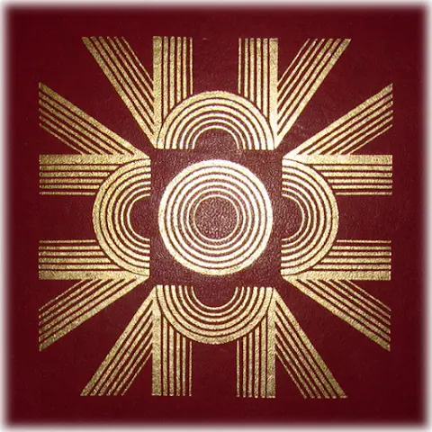

| Neděle | 25. 10. | 8:00 |
 30. neděle v mezidobí |
| Středa | 28. 10. | 16:30 | |
| Neděle | 1. 11. | 8:00 | Slavnost všech svatých |
| Pondělí | 2. 11. | 15:45 | Vzpomínka na všechny věrné zemřelé |
| Středa | 4. 11. | - | Mše sv. se nekoná |
| Neděle | 8. 11. | 8:00 | 32. neděle v mezidobí |